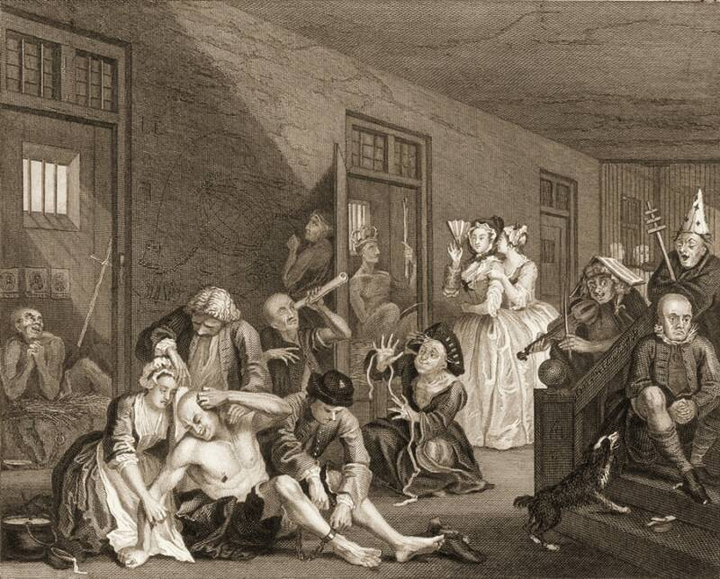

6500 BC:
Prehistoric skulls
 One of the earliest supernatural explanations for
One of the earliest supernatural explanations for
mental illness.
Used to treat epilepsy
Allow evil spirits to come out
2700 BC:
Positive and
negative forces
 "yin and yang"
Chinese medicine
Attributed mental illnes to imbalance of forces.
"yin and yang"
Chinese medicine
Attributed mental illnes to imbalance of forces.
1900 BC:
Mesopotamian &
Egyptian papyri
Wondering womb in women
Defined as hysteria by the greeks
Used pleasant odors to bring
uterus back to correct place
400 BC:
Hippocrates
separates religion
& supernatural
from medicine
Mental illness caused by
four essential fluids
Mental illness categorized as:
epilepsy, mania,
melancholia, brain fever
Humorism theory
13th Century:
Witch trials
 Mentally ill women were
Mentally ill women were
thought of as witches
Malleus Maleficarum (1486) was
written to guide in witch hunting.
~100,000 witches were burned at the stake
16th Century:
Hospitals &
Asylums
"Undesirables" were separated from
society and sent here
Confinement laws to protect society from metally ill individuals
Inhumane living and treatment conditions
18th Century:
Protests for the
mentally ill
“traitement moral”
In the St. Boniface hospital in Florence, Italy patients were liberated from their chains and were given therapeutic training
19th Century:
Overcrowding in
mental health
facilities

Asylums were extremely populated
Dorothea Dix protested for state hospital to be funded
Over 30 facilities we established in the US & Canada
20th Century:
Psychoanalysis
Dominant psychogenic treatment
Psychotropic medications including estraints, shock therapy and others were established
Over 30 facilities we established in the US & Canada
21st Century:
Diagnosis &
Drugs
Improvements in mental illness diagnosis
Mental illness as a product of chemical imbalances
Drug treatments for mental illness
Source: https://nobaproject.com/modules/history-of-mental-illness